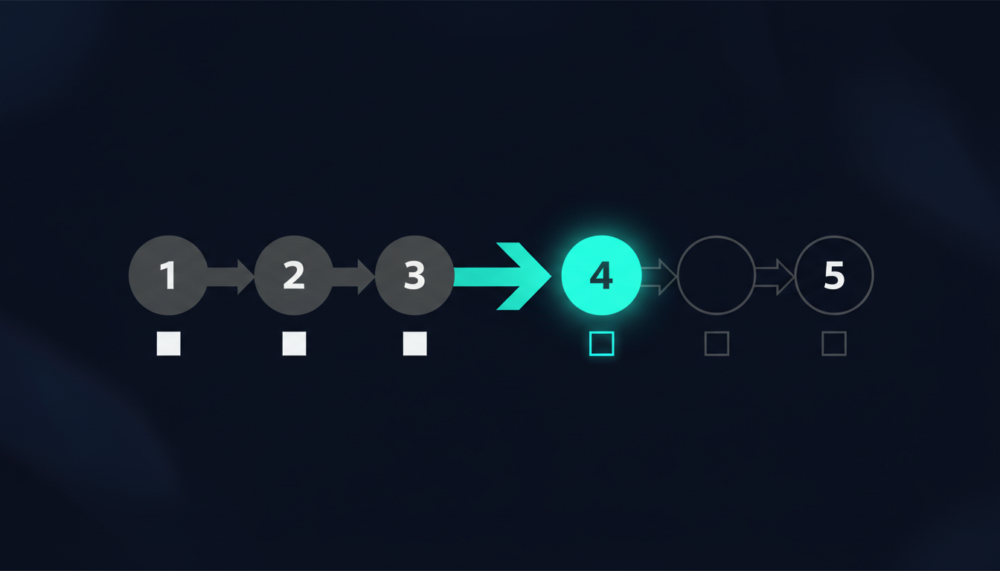

Inspirado em: "AI Agents: State, Memory, Consistency — A Deep Dive" de Neo Kim e Sivasankar Natarajan (The System Design Newsletter, maio/2026). Este post não traduz nem resume — converso com o original, adiciono o que ele deixou de fora e mostro como esses conceitos se materializam em ferramentas reais (LangGraph, Mem0, e o que aprendi rodando isso em produção).
TL;DR: A parte difícil de construir um agente de IA não é chamar o modelo. É manter ele coerente ao longo de horas ou dias de trabalho. Três peças resolvem isso: state (o que o agente está fazendo agora), memory (o que ele aprendeu ao longo do tempo) e consistency rules (o que prevalece quando os dois discordam). Erre a separação e seu agente esquece o que disse, repete perguntas, ou aplica preferências erradas. Acerte e o agente sobrevive a crashes, mudanças de contexto e usuários que mudam de ideia no meio.
O problema que os modelos não resolvem
Tem uma armadilha comum: a galera assume que "modelo melhor = agente mais coerente". Não é.
Mesmo com Claude Opus 4.6, GPT-5.4 e similares, agentes continuam quebrando exatamente nos mesmos pontos: esquecem turnos anteriores, repetem perguntas que já fizeram, e aplicam inconsistentemente preferências em tarefas longas. O modelo raramente é a causa. A causa é arquitetura de estado e memória mal projetada.
O artigo original separa esses conceitos com clareza. Vou pegar essa separação e adicionar três coisas que ele não cobre:
- Como ferramentas reais (LangGraph, Mem0, frameworks novos como AutoGen e PydanticAI) implementam essas ideias na prática
- Onde isso quebra em escala que o post não menciona
- Como o Dev Team Kit aborda alguns desses problemas (memória persistente entre sessões com score de decay, checkpoint de pipeline, etc.)
State: o "agora" do agente

O que é state, na real
State é o snapshot do que o agente está fazendo nesse momento: o plano atual, restrições ativas, o que já foi feito, o que vem a seguir. É a foto do NOW.
A diferença entre stateless e stateful fica clara num exemplo banal:
- Stateless: "traduza essa frase pro francês." Cada input é fresh start. Funciona pra one-shot. Não funciona pra workflow.
- Stateful: "planeje minha viagem completa." A cada decisão, o agente pergunta: em qual passo estou? o que já fiz? o que vem agora? Sem state, nenhuma dessas perguntas tem resposta.
O ponto que muita gente erra: state vive no backend, não no cliente. UI desconecta, refresh acontece, app cai. O agente precisa de uma visão estável do progresso mesmo assim.
Onde armazenar — depende da duração
Pra workflow curto (uma sessão), in-memory store basta. Pra qualquer coisa que tenha que sobreviver a restart: banco, KV store (Redis), ou objeto serializado gerenciado por um framework de orquestração.
LangGraph, por exemplo, vem com SqliteSaver e PostgresSaver como checkpoint backends prontos. A cada step, o agente carrega o snapshot mais recente e reconstrói o contexto. Esse carregamento é o que faz uma cadeia de N steps parecer uma coisa só ao invés de N chamadas isoladas.
Checkpoint, recovery e versionamento
Carregar state só funciona se algo gravou antes. Checkpoint salva o state nos pontos que você definiu como significativos — não a cada microação. Crash, timeout, redeploy no meio → recarrega o último checkpoint, resume dali.
Exemplo concreto do post: travel agent escolhendo voo de volta, API falha. Sem checkpoint: agente pergunta tudo de novo (datas, orçamento, voo de ida). Com checkpoint: o state guardou tudo, o retry pega exatamente onde parou.
O artigo cita que o SQL Bot interno do LinkedIn roda esse padrão em produção: sistema multi-agent hierárquico em LangGraph, queries longas dependem do checkpoint layer pra pausar, inspecionar state e continuar sem perder contexto.
Versionamento é o que o post toca de raspão e merece destaque: agentes long-running mudam ao longo do tempo. Schema de state evolui. Sem versioning, workflows em progresso quebram no momento que você faz deploy do novo formato. State versioning migra forward, bloqueia execution paths que não fazem mais sentido no schema novo, e permite rollout sem matar tasks em curso. Em sistemas onde workflows duram horas ou dias, isso não é overhead — é sobrevivência.
Memory: o "carrega entre tarefas"
Se state é o agora, memory é o que atravessa: decisões passadas, preferências acumuladas, conversas anteriores referenciáveis, dados de referência consultados em outros sistemas.
Agentes armazenam memory em 3 sabores. Confundir os três é onde a maioria dos bugs nasce:
Short-term — contexto da task ativa
Holds o contexto da task atual. Curto, limpa quando a task termina. Tipicamente em estruturas in-memory, session variables, ou dentro do próprio prompt do LLM. Lifecycle: cria quando task começa → atualiza durante reasoning/tools → limpa quando wraps up.
Regra simples: use pra decisão de uma task que não precisa sobreviver ao workflow.
Long-term — atravessa interações
Preferências do usuário, bookings passados, padrões recorrentes. Armazenamento: vector DB, KV store, document store, relacional. Write só acontece quando a info vale a pena guardar. Retrieval no início de uma task nova ou quando um sinal relevante aparece.
Periodicamente, agente sumariza ou faz merge de entradas antigas pra não inflar o store. Esse passo é o que separa long-term memory que funciona de long-term memory que vira lixo.
O artigo cita Mem0 como sistema de produção construído nessa ideia. Os números do Mem0 são notáveis:
- 91% de redução em p95 retrieval latency vs baseline full-context (testado no benchmark LOCOMO pra conversas longas)
- 90%+ de redução em token cost no mesmo teste
- 26% mais alto que sistema de memória da OpenAI em LLM-as-judge eval
O ganho não é mágico. É arquitetura: ao invés de carregar histórico inteiro no prompt a cada turn, armazena o que vale a pena e puxa só o que a decisão atual precisa.
External — dados que o agente não possui
Bancos de voos, listings de hotel, knowledge graphs, sistemas internos de record. O agente não armazena: consulta. Vivem em cloud DBs, APIs, knowledge graphs, ou índices RAG externos.
Quando uma decisão depende de dados que precisam ser oficiais, auditáveis e compartilhados, o agente consulta o system of record diretamente. Não pode estar no prompt.
Memory lifecycle — onde tudo quebra silenciosamente
O post lista 4 estágios que vale memorizar: Create → Update → Summarize → Delete. Pular qualquer um e long-term memory vira lixo silencioso.
Sinais de memory rot:
- Preferências antigas contradizem novas
- Decisões baseadas em meias-verdades acumuladas
- Custo de retrieval cresce sem motivo aparente
- Latência sobe gradualmente
O kit que mantenho usa um padrão parecido em .bot/learned-skills/: cada skill aprendida tem score 0-1, decay semanal, auto-archive abaixo de 0.3. Isso replica o lifecycle "Summarize → Delete" automaticamente, sem precisar de cron job manual.
Consistency: a regra que importa quando state e memory discordam
Usuário muda de ideia no meio da task. Tenta uma opção nova, se corrige, ajusta o que quer. Sometimes fala uma coisa segunda e o oposto terça-feira.
Agente que não lida com isso direito vira um dos dois extremos: repetitivo, preso em instruções antigas OU ansioso demais pra reescrever conhecimento de longo prazo a cada comentário.
A regra core do post é uma frase que vou repetir várias vezes:
Reaja rápido com state. Aprenda devagar com memory.
Quando memory escreve — hot path vs background
O time do LangChain enquadra duas opções que vale conhecer:
- "Hot path": agente salva o fato novo antes de responder ao usuário
- "Background": processo separado atualiza memory durante ou depois da conversa
Background writes são o que faz "learn slowly" funcionar — dão tempo pro sistema checar se a mudança se sustenta por mais alguns turns antes de virar memória permanente.
Se memory aprende rápido demais, ela apodrece: exceção rara vira regra, restrição de curto prazo vira permanente, tasks futuras quebram sem causa óbvia.
Retrieval seletivo por metadata
Agentes não carregam toda memory. Eles fazem query como banco, usando metadata em cada entrada:
topic: flights [seats, airlines, class, timing]
topic: hotels [room type, location, amenities]
topic: food [dietary restrictions, cuisine]
topic: budget [price sensitivity, limits]
duration: short-term | long-term
confidence: confirmed | inferredState atual escolhe quais slices puxar. Booking de voo puxa flights + budget, deixa hotels em paz. Foca o working context e impede memory velha ou irrelevante de vazar pra decisão.
Rollback em correções: trate como mudança de constraint
Esse insight é underestimado. Quando user corrige o agente, não trate como erro. Trate como mudança de constraint.
Agente sempre planeja sob um conjunto de constraints:
seat type = aisle
budget <= 800
departure = morning
hotel near city centerUser diz "quero janela em vez de corredor" — não está dizendo que você errou. Está atualizando a constraint. Job do agente: aplicar a nova sem jogar fora trabalho ainda válido.
Mecânica: rastreia quais steps dependiam da constraint antiga, rolla back até o ponto antes dela, replanetya com a nova, mantém os steps que sobreviveram. Não é restart do zero. É surgical rollback.
Failure modes que o post não detalha
O artigo cita "três modos de falha de memory" mas trunca antes de aprofundar. Vou cobrir os que vi quebrar em produção:
1. Memory poisoning
User adversarial (ou bem-intencionado e confuso) injeta info contraditória que vira "fato" na long-term memory. Agente começa a tomar decisões erradas com confiança alta. Mitigação: confidence scoring por entrada + dedupe periódico + memory provenance (de qual sessão veio cada fato).
2. Stale memory em sistemas externos
Você cacheou que o usuário "prefere Air France" há 6 meses. Air France quebrou rota dele. Memory diz uma coisa, realidade external diz outra. Solução: TTL por categoria de memória + revalidação assíncrona contra system of record.
3. Race conditions em multi-agent
Dois agents do mesmo "time" tentam escrever na mesma memory entry ao mesmo tempo. Vector DB típico não tem transação ACID. Last-write-wins silenciosamente sobrescreve trabalho do outro. Solução: locking por entrada + version stamps + reconciliation lógica downstream.
Onde isso aparece no Dev Team Kit (transparência: é meu projeto)
Boa parte desses conceitos aparecem materializados no Dev Team Kit que mantenho:
- State como checkpoint: pipelines YAML executáveis (
programs/*.yml) têm steps com gates humanos. Cada step pode pausar, salvar progresso, retomar de outra sessão. - Long-term memory com decay:
.bot/learned-skills/tem score 0-1 com decaimento semanal e auto-archive abaixo de 0.3. Implementa o Summarize → Delete automático. - External memory via MCP: 37 MCP tools que o agente consulta on-demand em vez de carregar tudo no prompt.
- Cross-call dedup com MinHash: quando agente repete o mesmo comando (e.g.
npm test12 vezes num loop autônomo), output redundante vira marker curto. 98% de redução de tokens em re-runs medida no bench público.
O kit não inventa esses padrões — eles existem na literatura (post original, LangGraph docs, Mem0 paper). Materializa eles num conjunto coerente de skills, hooks e MCPs auditáveis.
O que fica
Se você só lembrar uma coisa do post original: state ≠ memory ≠ external storage. Confundir os três é a raiz da maioria dos bugs de agente.
Se você só lembrar uma coisa deste post: "reaja rápido com state, aprenda devagar com memory". Tudo decorre disso. Hot path vs background writes. Rollback em correções. Memory lifecycle. Decay automático.
E se você está construindo um agente sério, não invente do zero. LangGraph, Mem0, AutoGen e similares já abstraem boa parte disso. Use-os, leia o código, entenda os trade-offs antes de reinventar a roda.
Recursos pra continuar
- Artigo original: "AI Agents: State, Memory, Consistency" — Neo Kim & Sivasankar Natarajan, System Design Newsletter
- LangGraph (checkpointing): docs sobre persistence
- Mem0 paper: "Mem0: Building Production-Ready AI Agents with Scalable Long-Term Memory"
- LOCOMO benchmark: paper original pra long conversation memory
- LangChain memory architecture: "Memory for Agents"
- AutoGen (Microsoft): framework multi-agent com primitives de state management
- PydanticAI: framework com type safety pra agent state
- Dev Team Kit (meu projeto): github.com/felvieira/claude-skills-fv — Apache-2.0, 41 skills, bench público